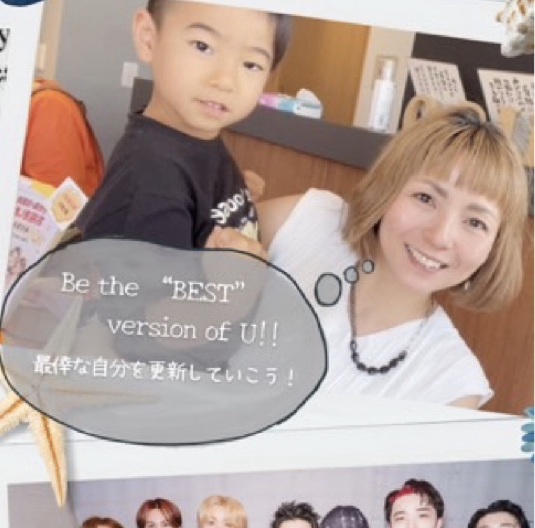

Chapter 02 — Breathe
はじめまして、はるなです。
人には本来、 自分で整う力がある。
私は7人の男の子と1人の女の子を育て、母となり、祖母となり、たくさんの人と関わる人生を歩んできました。
ヨガ講師として。母子保健推進員として。地域活動を通して。そして今は、ルシェールインストラクターとしてリンパケアやセラピスト育成に携わっています。
私が大切にしているのは「人には本来、自分で整う力がある」ということ。その力を引き出すお手伝いをしています。
私も最初から 自信があったわけでは ありません。
新しいことを始める不安。場所がない。経験がない。本当に私にできるの？
そんな気持ちは、私自身も経験してきました。だからこそ、これから一歩踏み出す人の気持ちがよく分かります。
サロンがなくてもいい。資格だけでもない。
大切な人を想う気持ちから始まる、セラピストという生き方を。